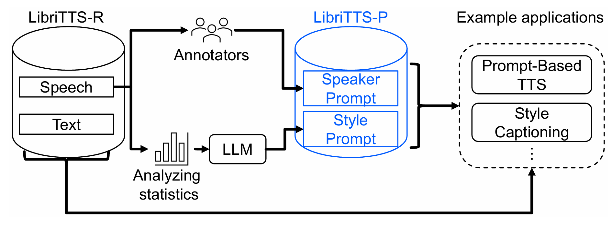

12. Redirection (2026.04.06)
| Meeting |
Z. Last Meeting Summary
- 평가 파이프라인 정리
- 데이터셋, 평가 방식
A. LIBRISONA Dataset
1. Background
1.1 LibriTTS-P
{kind=link}

- LibriTTS-P는 text-conditioned TTS 연구를 위해 설계된 다화자 영어 음성 데이터셋
- LibriVox 오디오북을 기반으로 한 LibriTTS-R에서 파생
구성
- 585시간, 2,456명 화자의 영어 음성
- 각 발화에 대한 두 가지 프롬프트 제공
- style prompt: 발화 단위로 자동 생성. pitch, speaking speed, loudness 통계를 기반으로 5단계 레이블링 후 LLM으로 자연어 변환
- speaker prompt: 화자 단위로 수동 작성. 3명의 annotator가 각 화자의 음성을 듣고 perceptual/impression 단어로 기술
1.2 Limitation 1: Speaker Identity의 모호함
- 오디오북 narrator는 narration과 dialogue를 하나의 발화 안에서 다르게 읽음
- 예를 들어
"Has she any brains?" asked Ojo.같은 문장에서 narrator는 따옴표 안의 character 발화와 따옴표 밖의 narrator 발화를 다른 억양으로 읽음
문제
- reference audio 신뢰성 문제
- 따옴표가 포함된 발화는 화자의 고유한 목소리가 아닌 character 연기가 섞여 있어 speaker identity의 기준으로 사용하기 어려움
- TTS 모델 생성 문제
- 따옴표가 포함된 텍스트를 입력으로 줄 경우 모델이 다른 억양으로 생성할 수 있어 일관성 평가를 오염시킴
1.3 Speaker Distribution 불균형
LibriTTS-P test-clean의 화자별 발화 수 분포가 불균등함

- 화자당 발화 수: min 1개 ~ max 355개, mean 123.8개, std 82.9개
- Gini coefficient: 0.366 (0=완전균등, 1=완전불균등)
- chi-square test: χ²=2165.5, p<0.001 (균등 분포 귀무가설 기각)
- 상위 3명 화자가 전체 발화의 20.2% 차지
이 상태로 benchmark를 구성하면 특정 화자를 잘 생성하는 모델이 과도하게 높은 점수를 받아 모델 간 공정한 비교가 불가능
2. Data Curation
2.1 Persona 정의
- LibriTTS-P는 화자(speaker)를 평가 단위로 사용
- 그런데 같은 화자라도 pitch, speed, loudness가 다른 발화들이 섞여 있어 동일한 조건에서의 일관성을 측정하기 어려움
- 이를 해결하기 위해 (speaker_id, style_prompt_key) 조합을 하나의 persona로 정의
- 같은 화자라도 style 조건이 다르면 다른 persona로 취급
2.2 따옴표 필터링
- 오디오북 narrator는 dialogue와 narration이 혼재한 발화에서 목소리를 바꿈
- 이런 발화는 reference audio와 TTS 생성 음성 모두에서 일관성을 저해
제거 기준: 따옴표 쌍의 외부에 narrator 텍스트가 존재하는 경우
| 케이스 | 예시 | 처리 |
|---|---|---|
| 전체 dialogue | "It is, good Dame Margolotte." | 유지 |
| dialogue 잔여 | ...something." / "...something | 유지 |
| dialogue + narrator | "Has she any brains?" asked Ojo. | 제거 |
| narrator + dialogue | What is that?" Ojo asked. | 제거 |
| narrator + dialogue + narrator | "I know," she said, "it is true." | 제거 |
| narrator + embedded quote | The "Jewel" song was playing. | 제거 |

2.3 Cap + 고정 샘플 수
Cap 적용 (speaker당 최대 persona 수)

- 필터링 후에도 speaker별 persona 수가 불균등
- 특정 speaker가 많은 persona를 가지면 benchmark 결과가 해당 speaker에 편향
Cap=5 적용:
- 최대 speaker 점유율: 3.2%
- 이상적 균등 분포: 2.8%
- 편차: 0.4%p (원본 4.8%p 대비 57.8% 감소)

고정 샘플 수 (persona당 N=5)
Persona당 샘플 수를 5개로 고정
ICC 추정 안정성 기준 (Shrout & Fleiss, 1979): k≥5 권장
N ＊ Cap 선정 과정
| N | Cap | Personas | Samples | Speakers |
|---|---|---|---|---|
| 3 | 5 | 170 | 510 | 36 |
| 5 | 5 | 156 | 780 | 36 |
| 5 | 7 | 198 | 990 | 36 |
| 7 | 5 | 139 | 973 | 35 |
N=5, cap=5 선택 이유:
- N=7은 speaker 1명 손실
- cap=7 대비 speaker 점유율 편차 절반 (0.4%p vs 0.8%p)
- 780개 샘플은 기존 TTS benchmark 대비 충분한 규모
최종 구성: 156개 persona * 5개 샘플 = 780개, 36명 speaker
3. Column 변경 및 추가
3.1. Speaker Prompt 통합
문제
- LibriTTS-P의 speaker prompt는 3명의 annotator(df1, df2, df3)가 각각 독립적으로 작성
- 이를 그대로 사용하면 어떤 annotator의 prompt를 쓸지 선택해야 하는 문제 有
- LibriTTS-P 논문 Table 3에서 annotator 간 Jaccard index가 최대 0.370으로 낮음
→ 세 annotator의 인식이 서로 다름
- 하나만 선택하면 정보 손실이 발생하고, 셋을 그대로 concatenation하면 중복되거나 모순된 표현이 섞일 수 있음

해결
LLM을 이용해 3개의 prompt를 하나의 prompt 로 통합
컬럼 구성:
speaker_prompt_0: LLM으로 통합한 prompt
speaker_prompt_1,speaker_prompt_2,speaker_prompt_3: 원본 3개 보존
3.2. Persona ID
(speaker_id, style_prompt_key) 조합을 고유하게 식별하는 column
Persona ID 형식:
speaker_id|style_prompt_key예:
1580|F_p-high_s-normal_e-normal
3.3 Persona Prompt
Style prompt와 speaker prompt를 모두 입력으로 사용해 LLM으로 생성한 자연어 prompt
3.4 Distance
Persona 내 각 sample의 speaker embedding과 persona 중심 간의 거리를 사전 계산하여 제공
중심 정의: Mean Embedding
Persona 내 모든 sample의 speaker embedding을 평균내어 중심으로 정의
- Speaker verification에서 다발화 평균 embedding이 표준적으로 사용됨
- Snyder et al. (2018) x-vector, Desplanques et al. (2020) ECAPA-TDNN 등에서 enrollment embedding을 여러 발화의 평균으로 정의
Distance Metric: Cosine Distance
- Speaker embedding space에서는 벡터의 방향이 화자 정체성을 나타내고 크기는 상대적으로 덜 중요
- L2 distance는 크기에 영향을 받지만 cosine distance는 방향만 비교
- Speaker verification 분야에서 cosine similarity가 표준 metric으로 사용(Kinnunen & Li, 2010)
4. 데이터셋 구성 및 통계
split: train, valid(dev), test<curated>

B. SONA BenchMark
- SONAL (LIBRISONA), SONAV (VCTK)
# SONAL Benchmark Suite
## Persona Length Variations:
- SONAL-B (Base Consistency)
Full-specification prompts
같은 페르소나, 다른 콘텐츠 프롬프트
- SONAL-S (Shortened Consistency)
Shortened/Under-specified prompts
같은 페르소나(짧은 프롬프트), 다른 콘텐츠 프롬프트
## Persona Semantic Variations:
- SONAL-E (Equivalent Consistency)
Paraphrased prompts
의미적으로 동등한 페르소나 간 일관성
- SONAL-D (Distinctive Discriminability)
다른 페르소나 간 구별성
## Content Variations:
- SONAL-P (Perturbation Consistency)
Perturbed content prompts
같은 콘텐츠 의미, 교란된 표현에도 일관성figure
SONAL-B

SONAL-Ｓ

SONAL-Ｅ

SONAL-Ｄ

SONAL-Ｐ

C. Methods
News!
- 또 하나의 Text-style prmpt TTS 모델 등장!
 https://github.com/k2-fsa/OmniVoice?tab=readme-ov-file
https://github.com/k2-fsa/OmniVoice?tab=readme-ov-file
C-0. 신기한 것 발견
# Use voice blending (60-40 mix)
kokoro-tts input.txt output.wav --voice "af_sarah:60,am_adam:40"
# Use equal voice blend (50-50)
kokoro-tts input.txt --stream --voice "am_adam,af_sarah"⇒ 사실 생각해보면 특징 생성은 이미 학습했던 특징 분포에서 보간(interpolation)하거나 외삽(extrapolation)한 것


⇒ Style Prompt TTS도 기존 모델들처럼 화자 이름을 지정하면 유사도가 높게 나온다고 Official하게 리포트됨
정리하면,
현재 TTS 모델에서 발생하고 있는 스피커 inconsistency 문제는
- 20~60 유사도 구간:
- 스타일 프롬프트 TTS 모델들은 학습에 등장한 스타일 프롬프트로는 어떻게 생성해야 하는지는 이해하였으나
- 새로운 입력에 대해서는 이전에 학습했던 스타일의 중간 지점을 어떻게 찾아내야 하는 상황인데, 찾아내야 하다보니까, 콘텐츠 프롬프트에 영향을 받아버린다.
- 진단 요약: 학습된 스타일의 중간점을 찾다가 content에 영향받음
- Style prompt는 discrete한 텍스트 → 연속적 interpolation이 어려움
- 새로운 조합 시 모델이 "어떤 스타일"을 만들지 모호
- Content가 강한 conditioning signal로 작용해버림
- 이건 전형적인 entanglement 문제
- 해결 방안:
스타일 프롬프트 TTS 모델들을 보이스 클로닝 모델의 특성을 띌 수 있도록 수정한다 형태가 적절할지도
- 가설 검증 방안: Parler TTS 모델에 학습에 사용된 화자 프롬프트를 넣었을 때와 새 프롬프트를 넣었을 때 유사도 벤치마크 수치 비교
- 60~100 유사도 구간:
- 보이스 임베딩과 같은 한정적인 정보로는 새로운 콘텐트 프롬프트에 대해 어떻게 처리해야 할지가 명확하지 않기 때문에 생성 보이스의 디테일이 달라지면서 디테일의 차이 때문에 유사도가 내려간다.
- 진단 요약: 제한된 embedding으로 새로운 content의 디테일 처리 불명확
- Reference embedding은 global voice characteristics만 캡처
- 새로운 content의 local prosody/intonation 처리는 모델 귀납편향에 의존
- 같은 화자가 다른 문장 읽을 때의 variance를 embedding이 표현 못함
- 이건 expressiveness의 under-specification 문제
- 해결 방안: ICL로 하나의 보이스 예시에 대해 추론 과정을 통해 디테일에 대해 어떻게 대응해야 할지 구체적으로 정하는 과정이 필요할 것으로 보임
- 가설 검증 방안: 보이스 클로닝 모델 중, ICL 기능이 탑재된 Qwen3 TTS 모델에 대해 ICL을 활성화 했을 때와 비활성화 했을 때 유사도 벤치마크 수치 비교
1번은 "what voice" 자체가 불안정
2번은 "how to speak" 디테일이 불안정
C-1. Selective Tuning (Token Addition)
요약 설명
- 유사도를 올리는 용도로 설계된 special 토큰을 추가하여 같은 스타일 프롬프트- 유사한 레퍼런스 오디오-다른 콘텐츠 프롬프트 페어로 파인튜닝
- 예를 들어, 어텐션 싱크를 명시적으로 고정하는 <consistency> 토큰 등 사용
이론적 한계
- Token 추가로 해결되는 문제가 아닐 수 있음
이전 실험에서 발견된 문제점
- 모델 구조가 사실은 Decoder Only 형태가 아니었을 수 있음


C-2. Convertive Tuning (Text Style Prompt → Reference Embedding)
요약 설명
- 스타일 프롬프트를 입력받아 보이스 클로닝 모델에 입력할 수 있는 레퍼런스 임베딩으로 변환
- align 과정이 필요한데, 다른 스타일 TTS 모델을 음성 생성 부분을 제거하고 레퍼런스 임베딩 변환기로 사용할 수 있다면 가능할 것으로 보임
- 두 paradigm의 bridge
- Style prompt의 interpretability
- Voice cloning의 consistency
이론적 한계
- Embedding space mismatch:
- Style TTS의 latent ≠ Voice cloning의 reference embedding
- 두 space가 호환되려면 alignment 필요
- 이건 non-trivial한 문제
- Alignment 방법:
- Option A: Joint training (둘 다 처음부터)
- Option B: Adapter/projection layer (freeze 후 align)
- Option C: Contrastive learning (같은 audio → 같은 embedding)
- Information loss:
- Text style prompt → 실제 음성보다 정보 적음
- "젊은 여성의 밝은 목소리" vs 실제 recording
- 디테일 재현에 한계
C-3. Hypernetwork LoRA Generation
요약 설명
- 오디오와 스타일 프롬프트를 동시에 처리할 수 있는 인코더가 존재하고, 그 인코더의 출력으로 뒷단 TTS 모델에 붙일 수 있는 LoRA를 생성하여 모델을 forward 패스 만으로 튜닝
이론적 한계
- Training complexity:
- Hypernetwork를 어떻게 학습?
- "좋은 LoRA"의 정의는?
- Meta-learning objective 설계가 핵심
- LoRA space exploration:
- LoRA parameter space가 거대함
- Hypernetwork가 이걸 잘 커버할 수 있나?
- Generalization 우려
- Computational cost:
- Hypernetwork 자체가 꽤 클 수 있음
- LoRA 생성 + application overhead
- Real-time inference에 부담
C-4. Test-time Training / Adaptation
요약 설명
- Base TTS 모델에 TTT 모듈을 장착하고 모델을 런타임에 빠르게 튜닝
- 입력된 스타일 프롬프트에 대해 3가지 정도의 서로 다른 콘텐츠로 생성한 후, 그 3개의 음성이 코사인 유사도가 비슷하도록 런타임에 튜닝
이론적 한계
- Parler-TTS에 이미 유사한 방식으로 training 했던 기억이 있음
- 학습 가능한 상태로 모델을 배포해야 하는 불편함
F. Feedback
# 교수님 피드백 기록